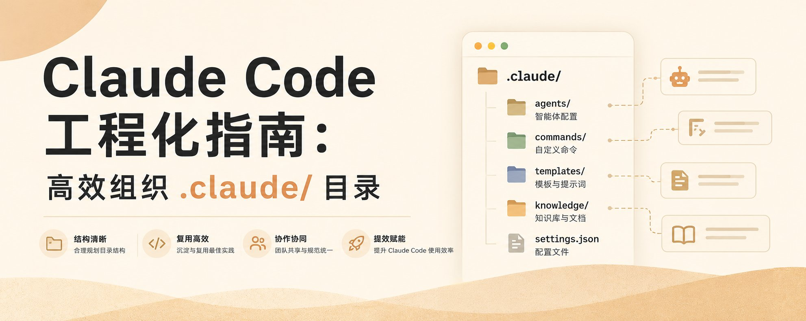

Claude Code 工程化指南：高效组织 .claude/ 目录
一个组织良好的 .claude/ 文件夹，让 Claude 更易被引导、被信任、易扩展
大多数 Claude Code 用户知道 .claude/ 文件夹的存在，但很少有人认真思考它的组织方式。项目小的时候一个 CLAUDE.md、几个设置文件就够了；增长后指令散落、文件变成"有用配置+难以解释的混乱"的混合物。Vince 这篇 122.5K 浏览的长文把这件事讲透了：5 段核心原则 + 渐进式成长路径 + 常见错误 + 配套录屏。文末附 1 个完整可复制的 .claude/ 目录蓝图。

Vince · Claude Code 工程化指南：高效组织 .claude/ 目录 · 2026/05/19
77 秒 · 1920 × 1080 · 原文配套录屏 · @vincemask
你打开这篇文的时候，可能正在想一件事："我的 .claude/ 怎么越用越乱？"
Vince 的回答很直接——大多数 Claude Code 用户没认真想过 .claude/ 的组织方式。项目小的时候一个 CLAUDE.md、几个 settings 文件就够了；项目一长，指令开始散落、文件变成"有用配置 + 难以解释的混乱"的混合物。
本文按 9 章拆解这篇 122.5K 浏览的长文（含配套录屏）。第 1 章给完整目录蓝图；第 2-6 章讲透 5 段核心原则——顶层要轻、CLAUDE.md 与 rules/ 怎么分、hooks/ 和 commands/ 怎么分、skills/ 和 agents/ 怎么用进阶结构、团队结构和个人结构怎么分；第 7 章给 6 步渐进式成长路径；第 8 章列 6 个常见错误；第 9 章是收尾的关键要点。
原文是写给 Claude Code 用户的工程化方法论；本文保留所有核心判断，但把场景从"职业开发者"平移到"任何用 Claude Code 干活的非程序人"——AI 自媒体写作、内容流水线、Agent 工作流搭建，全用得上。
The target folder structure
先看一眼完整的目录长什么样。这是项目最终的样子，不是起步的样子——Vince 在第 7 章会告诉你怎么从最小可用版本逐步加进这些文件夹。
your-project/ ├── CLAUDE.md # 主项目指令 ├── CLAUDE.local.md # 个人覆盖（不提交） └── .claude/ ├── settings.json # 控制层 ├── settings.local.json # 本地覆盖 ├── rules/ # 模块化指令 ├── hooks/ # 自动化脚本 ├── commands/ # 可复用提示词工作流 ├── skills/ # 打包能力 └── agents/ # 专用子代理
这一张图就把全文讲透了——分成两半看。左半边（项目根目录的 CLAUDE.md + .claude/）是团队共享的，提交到 Git；右半边（CLAUDE.local.md + .claude/settings.local.json + ~/.claude/）是个人偏好的，不提交。后面的 5 段核心原则会逐条解释这每一层是干嘛的、为什么这么放、什么时候该拆出来。
CLAUDE.md + .claude/settings.json 用上，后面按需添加。这张图是你的目标参考点，不是 Day 1 的 TODO 清单。
Keep the top layer light
第一段原则就一句话：CLAUDE.md 负责引导，settings.json 负责控制。分开。
大多数人的第一反应是把所有东西都塞进 CLAUDE.md。"这是给 Claude 的指令"——听着对，做法错。因为 CLAUDE.md 的内容是每次会话都会被重新读入上下文的，文件越大、噪声越多，Claude 越容易忽略后面的内容。
更干净的做法是分两层：
- 引导层：CLAUDE.md —— 解释项目"是什么"（技术栈、架构、关键命令）和"怎么工作"（全局约定）。Claude 读了知道自己处在哪个项目、可以做什么。
- 控制层：.claude/settings.json —— 控制 Claude "能做什么"（权限范围、自动执行什么、要确认什么）和"在哪一层操作"（项目级 / 用户级行为）。
这两层不要混在一起。"禁用 npm 强制推送"是一条控制指令，应该在 settings.json 里、不该在 CLAUDE.md 里；"用 pnpm 不用 npm"是一条约定，应该在 CLAUDE.md 里、不该在 settings.json 里。混了之后调整起来分不清哪条是谁的。
中间层是两个 .local 文件——CLAUDE.local.md 和 .claude/settings.local.json。它们是个人覆盖，不进 Git 版本控制。这一层是团队结构和个人偏好之间的隔离带，下一章会细讲。
CLAUDE.md。如果有"禁用某个危险命令""自动跑测试"这种控制类内容，把它们搬进 .claude/settings.json 的 permissions 字段。CLAUDE.md 留 只读解释——栈、架构、约定。文件控制在 200 行内。
CLAUDE.md vs rules/
项目一长，CLAUDE.md 就开始拥挤。这是必然的——指令多了、约定多了，文件就开始长。这个阶段不要硬塞，而是把"专项指导"拆进 rules/ 文件夹。
划分标准很简单：每次会话都需要的内容放 CLAUDE.md，只有相关场景才用到的放 rules/。
CLAUDE.md 放什么：
- 主要技术栈——用的什么语言、什么框架、什么包管理器
- 高层架构——模块怎么拆、为什么这么拆
- 最重要的开发命令——怎么跑、怎么测、怎么构建
- 广泛适用的代码约定——命名风格、文件组织、提交规范
- 项目级警告或约束——绝对不能碰的边界
rules/ 放什么：
- 某模块/某领域的专项规则——前端组件怎么写、后端 API 怎么设计、测试覆盖标准、数据管道约定
- 不同人有不同标准的细节——
frontend.md一个人写、backend-api.md另一个人写 - 想按路径限定作用域的规则——只有改
/src/api/时才需要加载api-style.md
.claude/ └── rules/ ├── frontend.md # 组件结构、状态管理、样式约定 ├── backend-api.md # REST 设计、错误码、鉴权 ├── testing.md # 测试覆盖、命名、断言风格 └── data-pipelines.md # schema 演进、partition、监控
判断要不要拆出来的标志有 5 个：
- CLAUDE.md 开始显得拥挤。超过 200 行就开始拆。
- 不同仓库区域需要不同指导。前端 / 后端 / 数据的规则本来就不一样，混在一起 Claude 也会困惑。
- 不同人有不同标准。拆文件之后可以分人维护。
- 团队经常更新约定。小文件更容易改、PR review 也好做。
- 想按路径限定指令作用域。这是 rules/ 相比 CLAUDE.md 的核心优势——只有改相关文件时才加载。
CLAUDE.md 如果超过 200 行，今天就拆一次。把"只在改前端时用得到"的指令搬到 rules/frontend.md，CLAUDE.md 留"每次都要看的"。别等它长到 500 行再拆——那时候 Claude 已经开始忽略后面一半了。
hooks/ vs commands/
第 3 段原则讲的是自动化和可复用的区别——hooks/ 是"不需要你说就跑"，commands/ 是"你说一声才跑"。
hooks/：自动运行的脚本，不进对话。Claude 不会知道它们存在，它们只是在事件发生时拦截、清理、验证。
- 拦截危险操作。
block-dangerous-commands.sh拦下rm -rf /、git push --force这种命令。 - 清理或验证输出。
format-edits.sh在 Claude 改完 TypeScript 文件后自动跑 prettier。 - 强制执行工作流要求。
run-tests-before-stop.sh让 Claude 在宣布"完成"前必须跑一遍测试。
commands/：可复用的提示词工作流，不是自动运行的。你写一段 Markdown，Claude 读进去执行。一个文件就是一条工作流。
- 审查 PR。
review-pr.md告诉 Claude"按这份清单审查 PR"。 - 编写测试。
write-tests.md告诉 Claude"按这个模板写单测"。 - 为发布准备变更摘要。
summarize-changes.md让 Claude 把过去一周的 commit 整理成用户能看的 changelog。
.claude/ ├── hooks/ │ ├── block-dangerous-commands.sh │ ├── format-edits.sh │ └── run-tests-before-stop.sh └── commands/ ├── review-pr.md ├── write-tests.md └── summarize-changes.md
这条原则里 Vince 顺带提了一个容易踩的坑：命名要让用途一目了然。format-edits.sh 一看就知道干嘛的，script1.sh 永远要再打开看一眼。commands/ 同理——write-tests.md 比 cmd1.md 强 10 倍。命名 = 搜索 = 找得到 = 用得上。
format-edits.sh。如果你想"以后 PR review 时按固定清单审"——这是 command，写一个 review-pr.md。先做一件，不要一次写一堆。
skills/ and agents/
hooks/ 和 commands/ 处理的是"单个动作"。当一个工作流变深、有多个步骤、要带配套文档，commands/ 就撑不住了——这时候上 skills/。当一个角色变专、需要独立思考空间、要做隔离决策，上 agents/。
skills/：打包的能力。工作流有多个步骤、每个步骤要配套文档时用。一个 skill 是一个目录，目录里放 SKILL.md（入口说明）和其他配套文件。
.claude/ └── skills/ ├── release-prep/ │ ├── SKILL.md # 入口：如何运行这个 skill │ └── release-template.md # 配套模板 └── docs-audit/ ├── SKILL.md └── style-guide.md
agents/：专用子代理。需要更聚焦的角色时用——比如专门做 code review 的 agent、专门做安全审计的 agent、专门写文档的 agent。agents 有自己的上下文和工具集，能在不污染主对话的情况下独立完成深度任务。
.claude/ └── agents/ ├── code-reviewer.md # 按团队 PR 标准审代码 ├── security-auditor.md # 安全漏洞审计 └── docs-writer.md # 按风格指南写文档
commands/ vs skills/ 的区别：
- commands/ = 轻量可复用任务。一个文件够了。
- skills/ = 更丰富的打包工作流。多个步骤 + 配套文档。
Vince 在这一段提了一个重要的合并信号：如果两个 skill 高度重叠，合并或简化；agents/ 同理。文件夹多不是目标，每个文件夹有清晰独立的用途才是。文件越多越要警惕——这正是组织失序的开始。
Team vs personal structure
第 5 段原则解决的是个人偏好污染团队文件的问题。这是 Claude Code 团队协作里最常踩的坑之一。
判断标准只有一条，Vince 把它写得极简：
翻译成更直白的判断：
- "所有人 / 大多数人都应该这样" → 项目级
CLAUDE.md/.claude/settings.json/rules/ - "就我个人偏好这样" → 本地
CLAUDE.local.md/.claude/settings.local.json或全局~/.claude/
举个例子。"代码用 single quote 不用 double quote"——这是团队约定，放项目级。"我习惯用 pnpm 不用 npm"——这是个人偏好，放 ~/.claude/settings.local.json。"我会先读 README 再开始工作"——也是个人偏好，放 CLAUDE.local.md。
这两个 .local 文件是团队结构和个人偏好之间最重要的隔离带。它的存在让你能调整自己用 Claude 的方式，但不影响别人拉代码后看到的内容。.gitignore 里加上两行：
# .gitignore
CLAUDE.local.md
.claude/settings.local.json
把这两个文件排除出版本控制——个人配置就不进 Git 仓库，不污染团队文件。
CLAUDE.md，提 PR 让所有人受益。如果只是你 → 加到 CLAUDE.local.md，不污染别人。下次调整前先做这个判断，少很多冲突。
Add folders only when you need them
看到第 1 章那个完整蓝图，你的本能反应可能是"那我直接全建出来"。不要。Vince 明确反对"为存在而建文件夹"的做法。
正确做法是按需增加。每加一个文件夹之前先问一句：我现在真的用得到吗？
Vince 给的 6 步渐进路径：
- 起步：
CLAUDE.md+.claude/settings.json。这是 Day 1 的最小配置——CLAUDE.md 写项目是什么、怎么工作，settings.json 设权限。能覆盖 80% 场景。 - 指令膨胀：加
rules/。CLAUDE.md 超过 200 行就开始拆。规则按模块/区域分文件，按需加载。 - 需要自动化：加
hooks/。有些动作你希望"不必说就跑"——改完文件自动格式化、提交前自动跑测试、危险命令自动拦截——这些放 hooks/。 - 提示词重复：加
commands/。你发现自己每次都要和 Claude 说同一段话（"按这个清单审 PR"），把它写进commands/，以后一句话就能调出来。 - 工作流变深：加
skills/。一个 command 已经撑不住你的工作流——多步骤、要配套文档、要 SKILL.md 入口——升级成 skill。 - 需要专精角色：加
agents/。一个工作流需要独立思考、要隔离上下文、要专属工具集——派一个 agent 出去。
这个顺序不是死规矩，但反映了从轻到重、从单文件到多文件、从自动到专精的演进。每个新文件夹的加入都应该回答"为什么之前的形式不够用了"——而不是"为什么不该有"。
.claude/。删掉所有你过去 30 天没用过的空文件夹和空文件。如果一个 skills/release-prep/ 三个月没打开过，删掉。组织的目的不是"显得工程化"，是"每天用得到"。
What to avoid
这一章是反面清单——Vince 列了 6 个他在别人项目里反复看到的失败模式。每个错误都附了正确做法。
| 错误做法 | 正确做法 |
|---|---|
| CLAUDE.md 塞太多内容 | 专项指导移入 rules/，CLAUDE.md 只留每次会话都用的 |
| 提前创建不需要的文件夹 | 等工作流确实需要时再加，按第 7 章的渐进路径走 |
| 个人偏好混入团队文件 | 用 CLAUDE.local.md 或 ~/.claude/，.gitignore 排除 |
文件名模糊（script1.sh） |
命名要让用途一目了然——format-edits.sh、review-pr.md |
| 废弃文件不清理 | 定期清理 commands/、skills/、agents/ 里的死文件 |
| 把所有指令同等对待 | 区分全局指令、模块化规则、自动化脚本、可复用工作流——各进各的文件夹 |
这一章是全文的镜子——前面讲的所有原则都是为了避开这 6 个坑。最危险的不是"做错了什么"，是"做了一个看起来有但实际没用的文件夹"。空文件夹是混乱的开始，不是因为它做了坏事，是因为它让人误以为"已经组织好了"。
The questions an organized folder answers
原文收尾那段写得最好——一个组织良好的 .claude/ 文件夹应该能立即回答下面这些问题。每个新成员 / 你自己隔 3 个月回来 / 新机器上 clone 代码，都应该能在 1 分钟内答出这些问题。
- 项目级指令在哪里？→
CLAUDE.md+.claude/settings.json，进 Git - 模块化规则放哪里？→
rules/，按模块 / 区域分文件，按需加载 - 自动化脚本放哪里？→
hooks/，事件触发自动跑，不进对话 - 可复用工作流放哪里？→
commands/（轻量）或skills/（多步骤打包） - 哪些是共享的，哪些是私人的？→ 项目级进 Git，
.local和~/.claude/不进 - 哪些是活跃的，哪些只是实验？→ 活跃的留，实验性的 30 天没动就删
Vince 收尾一句："最高效的 .claude/ 文件夹不是功能最丰富的，而是每个部分都有清晰用途的。"
翻译过来：组织好的 .claude/，让 Claude 用起来变得可预测、可维护、易于团队共享。三个词——可预测、可维护、可共享——这是组织工作的全部回报。它不是"让文件好看"，是让 Claude 在你的项目里用起来感觉像同一个工具，而不是每次都在猜你想要什么。
SOURCES & CREDITS
引用与原文出处
-
ORIGINAL ARTICLE
Claude Code 工程化指南：高效组织 .claude/ 目录
作者：Vince (@vincemask) · 发布于 2026/05/19 · 122.5K 浏览
原文链接（X 长文）：https://x.com/i/article/2056725327167275008
摘要链接（X 主帖）：https://x.com/vincemask/status/2056757482152960110 - AUTHOR · X https://x.com/vincemask
- ACCOMPANYING VIDEO 原文附 77 秒 1080p 录屏展示 .claude/ 目录组织方式，本文已内嵌在文章开头位置。
- INTERPRETATION 本文为解读版本，按中文阅读习惯重排。原文是写给 Claude Code 用户的工程化方法论长文，本文保留所有核心判断和目录蓝图（项目级 vs 用户级完整结构、5 段核心原则、渐进式成长路径、6 个常见错误），并把场景从"职业开发者"平移到"任何用 Claude Code 干活的非程序人"——AI 自媒体写作、内容流水线、Agent 工作流搭建，全用得上。
如果你只做一件事：今天就检查一遍你的 .claude/。删掉过去 30 天没用过的空文件夹和空文件，CLAUDE.md 控制在 200 行内，超出的部分拆进 rules/。最高效的 .claude/ 不是功能最丰富的，而是每个部分都有清晰用途的。
组织良好的 .claude/，让 Claude 用起来变得可预测、可维护、可共享。
读完了。下一步：打开你的 .claude/，删一个空文件夹。